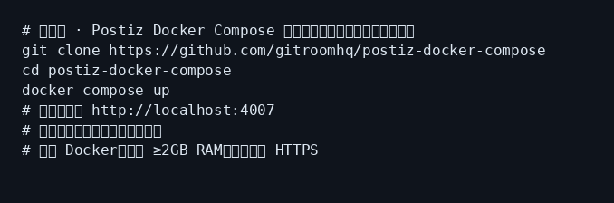
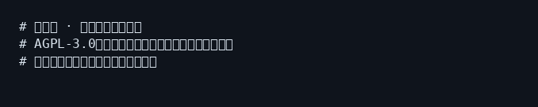
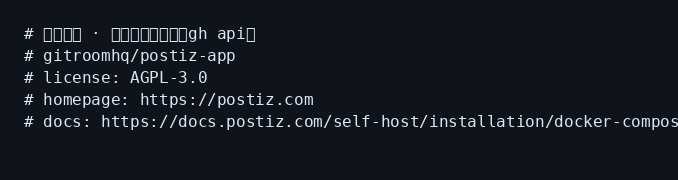

Postiz 小白中文教程
社区非官方导读 · 上游 gitroomhq/postiz-app · 官网 postiz.com
完整图文教程在 GitHub README（Compose 安装、演示任务、踩坑、AGPL 合规）：
30 秒安装（Docker Compose）
git clone https://github.com/gitroomhq/postiz-docker-compose cd postiz-docker-compose # 配置环境变量后： docker compose up # 浏览器打开 http://localhost:4007
截图



记住三件事
- 自托管需自备各社媒开发者应用；Cloud 已预审
- 默认端口约 4007；Temporal UI 约 8080；改 env 后要 recreate
- 上游软件 AGPL-3.0；教程文本 MIT；请只从官方仓库拉 Compose